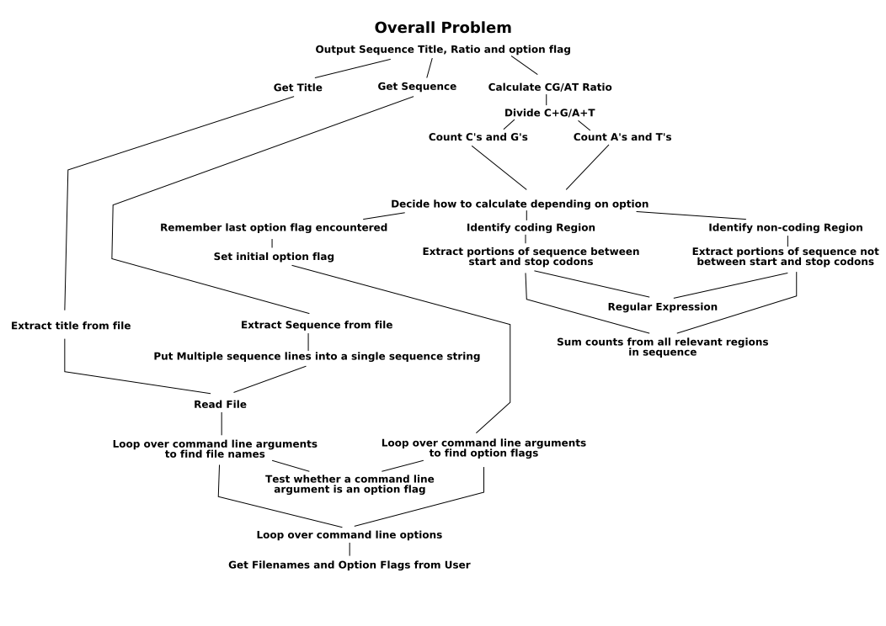

Running programs from the shell command line provides us a number of
conveniences. Tab completion, parameter expansion, and shell expansion.
Shell expansion refers to the fact that the shell (at least on *nix
systems) expands various special characters. So the command
python my_prog.py *.txt actually becomes (depending on
directory contents) python my_prog.py input1.txt input2.txt
todo.txt. Which means our program never sees '*.txt' as a
command line argument in 'sys.argv'. This is actually quite useful to
us as programmer's, since we don't have to interpret '*.txt' ourselves.
However, it does mean that our programs frequently receive a variable
number of command line arguments.
Suppose we wanted to write a program that deals with many files. We want the user to be able to specify those filenames, that the program should operate on, conveniently. Specifying them on the command line is the easiest thing for both user and programmer. The user is in a familiar environment, the programmer gets a list of files that is easy to deal with, but possibly interspersed with other options. For example,
Write a program that outputs the CG/AT ratio for each sequence in a given FastA file, for any number of FastA files specified from the command line. However, sometimes we only want to count the CG/AT ratio within coding regions, other times strictly outside of coding regions, and most often just overall. We write our program to recognise three options, '-e' (expressed i.e. within coding region), '-i' (intragenic, i.e. not expressed), and '-a' (all, i.e. the entire sequence). We want the user to be able to specify which files they list will be treated in which way, and allow them to do so by treating all files normally, unless they are preceded by an option flag, in which case all filenames following the option flag are treated accordingly. Option flags are obviously mutually exclusive.
This is a great case study to consolidate the skills we have acquired so far. So let's start by stating the problem more formally.
Write a program that accepts a list of filenames and/or option flags on the command line. Option flags may be one of '-e', '-i', or '-a'. For each filename specified, for each sequence in the file, if it is a FastA file, output the CG/AT ratio of; the entire sequence if the most recently preceding option flag was '-a', coding regions only if the most recent preceding option flag was '-e', or non-coding regions if the most recently specified option flag was '-i'.
Ahh, shorter and more precise already! Great! Let's start breaking it down into manageable chunks, using this diagram.
The bit that this section is all about is at the bottom left. So far, we've been dealing with command line arguments statically, defining their placement, accepting specific numbers of them and dealing with them by their position. But what happens if the user wants to specify an option after a filename, or an option between filenames to change the way the second file, but not the first, is handled. For this, we must remember that 'sys.argv' is a list, and we can loop over it.
#!/usr/bin/python
#cgat-example.py
import sys
def show_cgat_ratio(filename):
...
option = 'all'
for arg in sys.argv[1:]: #check each argument beyond the first
if arg.startswith("-"): #this argument is an option flag
if arg == '-e':
option = 'expressed'
elif arg == '-i':
option = 'intragenic'
elif arg == '-a':
option = 'all'
else:
print >> sys.stderr, "%s is an invalid option"%(arg, )
sys.exit(1)
else: #this argument should be treated as a filename
show_cgat_ratio(arg)
Unix, and thus Linux, is an operating system built for programmers, by programmers. As such it adheres to some fairly fundamental principles. *nix is also the primary environment in which bioinformaticists work, so knowing and understanding these philosophies is important.
There's some highly recommend reading on these philosophies here.
{kind=link}